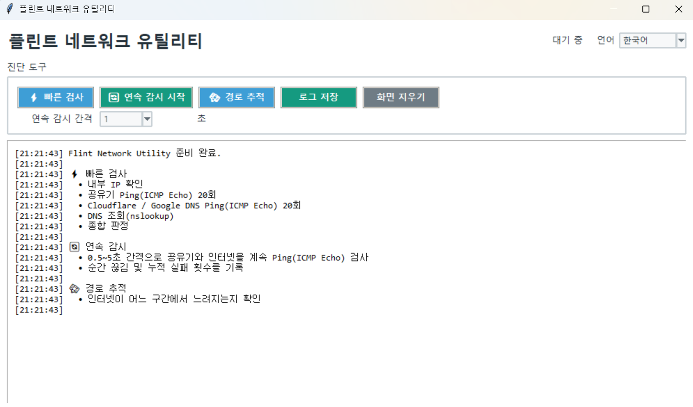

플린트 네트워크 유틸리티
버전: 1.1.0
빠른 검사
- 프로그램을 실행합니다.
빠른 검사를 누릅니다.- 검사가 끝나면 하단의 종합 판정을 확인합니다.
- 필요한 경우
로그 저장을 눌러 결과를 보관합니다.
빠른 검사는 다음 항목을 확인합니다.
- 내부 IP
- 기본 게이트웨이
- 공유기 Ping 20회
- Cloudflare 및 Google DNS Ping 20회
- DNS 조회
- 패킷 손실과 지연시간
- 문제 구간 종합 판정
연속 감시
순간적으로 발생하는 인터넷 끊김을 확인할 때 사용합니다.
- 감시 간격을 선택합니다.
연속 감시 시작을 누릅니다.- 끊김이 발생할 때까지 프로그램을 실행해 둡니다.
- 검사를 끝낼 때
연속 감시 중지를 누릅니다.
공유기와 외부 인터넷을 계속 검사하며 누적 실패 횟수를 기록합니다.
경로 추적
경로 추적을 누르면 외부 인터넷까지 거치는 구간을 확인할 수 있습니다.
실행 환경
Windows의 ping, route, nslookup, tracert 명령을 사용하므로 Windows 전용입니다.
Windows 실행 안내
Windows에서 다운로드한 실행 파일이 보안 기능에 의해 차단될 수 있습니다.
실행되지 않는 경우 파일을 마우스 오른쪽 버튼으로 클릭한 후 속성 → 차단 해제 → 적용을 선택하고 다시 실행해 주세요.
Flint 도구는 별도의 코드 서명 인증서를 사용하지 않으므로 알 수 없는 게시자로 표시될 수 있습니다.